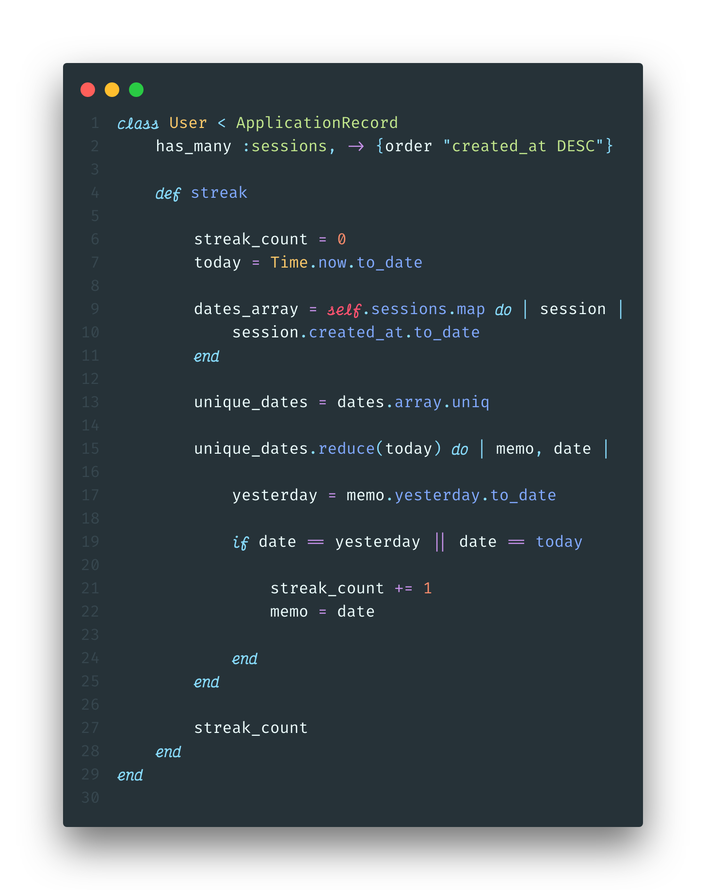
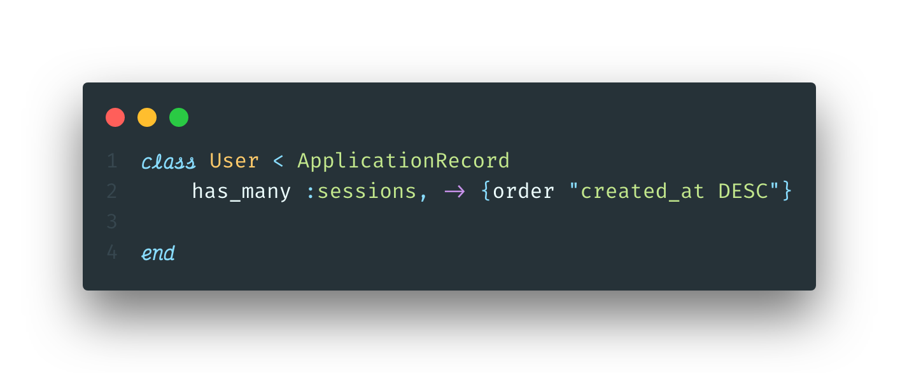
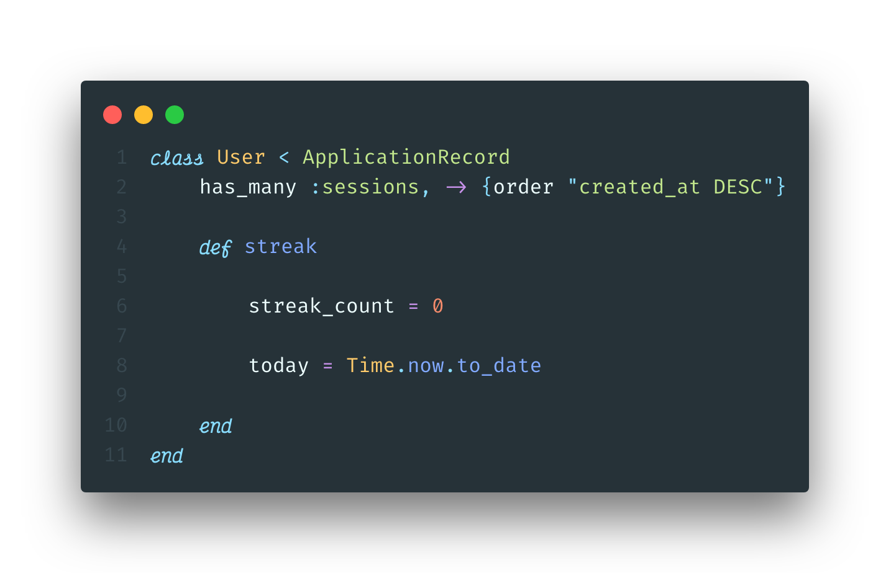
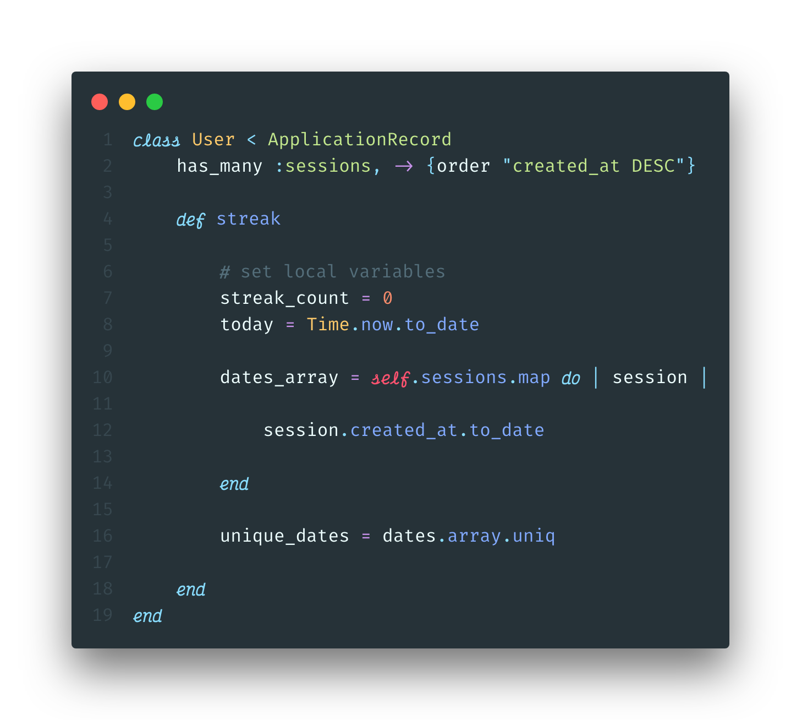
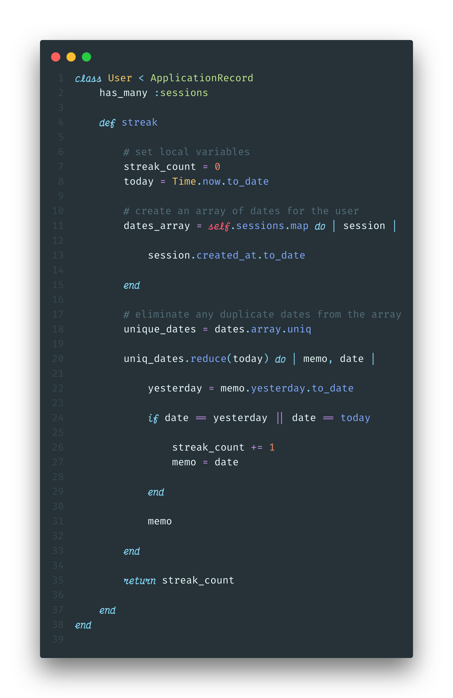
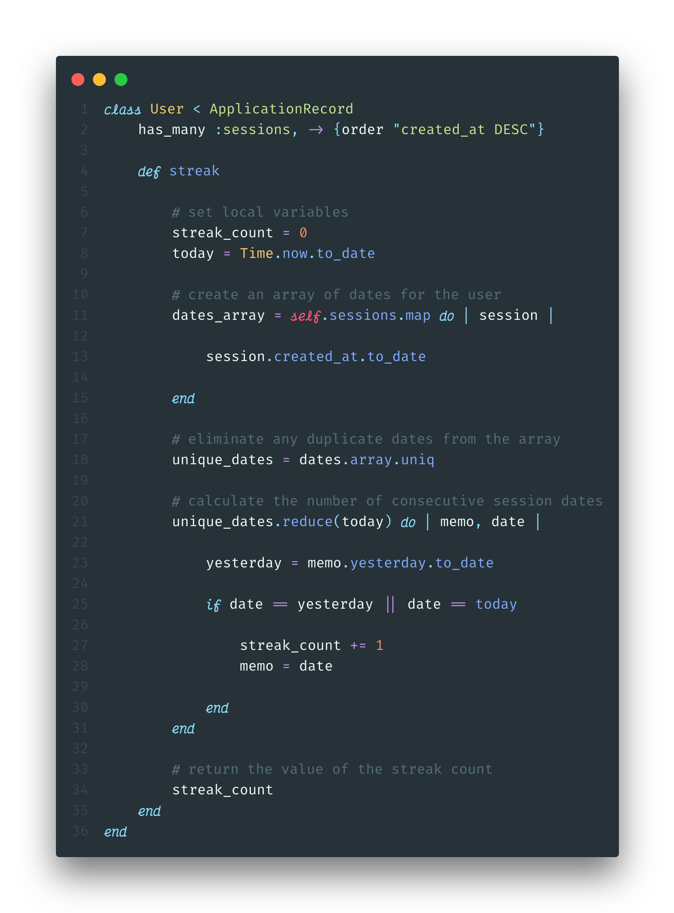

Tracking user streaks in Ruby
maintain user engagement through daily streak-tracking
From Duolingo to Headspace, many of the most popular apps today track users’ “streaks”. By keeping track of the number of days in a row a user has logged in and completed a task, these apps aim to create a beneficial habit for the user, while simultaneously insuring an active daily user base. Evidence seems to indicate that desire to keep a streak going will indeed motivate a person to do a task they might not otherwise.
With streaks being such a popular feature, a friend and I decided to try and incorporate it into a recent project we were working on. The application walked a user through the steps of a Wim Hof breathing cycle, and we wanted to display the number of days in a row they had completed at least one cycle.
Table of Contents
The goal
Track the number of consecutive days a logged-in user completed a breathing cycle, and display that number on the home page of our application. When the user completes a new session on a consecutive day for the first time, that number should update immediately.
The solution
After a few unsuccessful attempts at using gems or code-snippets, we decided it would be easier and a better learning experience to write our own code. We also opted to track the streaks in the back end, because Ruby makes working with dates and times simpler. Here is the final version:

The breakdown
Our application is built on a ruby-on-rails back-end, with a vanilla JavaScript front end. There are two models: User and Session. A Session belongs to a User, and a User has many Sessions.
Step 1: Set up relationships

First we need to create a Ruby class of User, which inherits from ApplicationRecord, a rails model which includes the Active Record ORM (more on Object-Relational-Mappers here). We can then add the ActiveRecord syntax for a has-many relationship as seen on line 2. This allows us to access all of a User’s sessions by simply calling .sessions on in instance of a User. Additionally, Active Record relationships can take a second argument, scope, which allows us to customize the SQL query. We will want to haver our array ordered from most recent date to least recent date, which can be accomplished if we query for descending order:
has_many :sessions, -> {order "created_at DESC"}
Step 2: Define an instance method

Next, we need to create an instance method, streak, that we can call on an instance of a User to get their streak. Inside this method, we will declare a a couple local variables we will need later in the function. First, lets set streak_count to 0. We should also define today for readability. Ruby allows us to easily find and format the current day using Time.now.to_date. Time.now will return a date in a long format:
Time.now
=> 2019-10-15 16:16:16 -0400
Since we only want to keep track of days, we can get rid of all of the extraneous information using to_date. This will return a simple, readable date format.
Time.now.to_date
=> 2019-10-15
Step 3: Create an array of dates

In order to make sure that multiple sessions in the same day will not count towards the streak, we want to create an array only containing the unique dates. We will do this in two steps:
- Using the enumerable method
.map, we can create an array of dates converted from thecreated-attimestamp for every session.
dates_array = self.sessions.map do |session|
session.created_at.to_date
end
- Apply
.uniqto that array to ensure it only includes unique dates.
unique_dates = dates_array.uniq
Finally, we need to establish a default value for the streak_count, 0. We now have most of the variables we will need to calculate the streak!
Step 3: Calculate the streak
For this step, we will take advantage of the Ruby enumerable method reduce. If you are not familiar with reduce, I would recommend checking out this great article.

Lets walk through this method. The basic structure of a reducer in pseudocode looks like this:
array_variable.reduce(starting_value) do | accumulator, current_element |
action
end
Typically, the accumulator (conventionally called the memo) is the return value of the method. For example, if you were calculating the sum of an array of numbers, it would look like this:
[1, 2, 3].reduce(0) { |memo, n| memo + n }
# => 6
However, for our method, we need to track two different variables: the current streak value, and the date of the last consecutive session. This is because we are counting in reverse chronological order, starting with today’s date. Lets break it down:
unique_dates.reduce(today) do | memo, date |
yesterday = memo.yesterday.to_date
end
Here we are calling reduce on the unique dates array, and passing in today, which we defined in step 2, as starting value for the memo. Then we are defining a local variable, yesterday, as the reformatted date of the day before the memo.
unique_dates.reduce(today) do | memo, date |
yesterday = memo.yesterday.to_date
if date == yesterday || date == today
streak_count += 1
memo = date
end
end
Finally, we want to create an if statement that determines when to increment the streak count. If the user had finished a session today, then date will be equal to today during first iteration through the array; we would want to increment then. For each following iteration, we want to check if date is equal to yesterday. If it is, that means that the user has finished a session three days in a row, and so we should increment again. This will continue to increment as long as the next date in the array is the day prior to the current date we are iterating over. This works because we ordered the sessions array in descending order based on their created_at attributes, as mentioned above.
important: Don’t forget to return the streak count at the end of the streak method, or else the return value will be the final memo from our reducer.
Congrats! You can now calculate user streaks in your rails application
This code should be modifiable to work with any Active Record model with a has_many relationship. Good luck tracking all those streaks!
Below is the final code with comments included, and you can check out the app this code was written for here.

GitHub Gist
References
- Wim Hof Method
- Active Record Basics
- What is an ORM and Why You Should Use it
- What is a Ruby Reducer?
- Scopes for belongs_to